The Relationship Between Screen Time and Sleep Quality Among Students
Exploring how daily technology use may relate to sleep duration and sleep quality among students.
Research Problem
Smartphones, computers, tablets, televisions, and gaming systems have become major parts of students’ everyday lives.
Across modern university campuses, digital displays are involved in virtually every daily routine. Students continuously interact with screens for diverse academic, vocational, and personal activities:
The Impact of Nighttime Screen Use
High amounts of screen use, particularly near bedtime, may be associated with later bedtimes, shorter sleep duration, and poorer sleep quality. Exposure to screen lighting and high-stimulation digital media before sleep can disrupt natural circadian rhythms and interfere with restful sleep.
Why This Issue Matters for College Students
Sleep is foundational to overall student well-being and academic achievement. Inadequate or disrupted sleep directly influences:
Research Questions
“How does daily screen time relate to sleep quality among college students?”
Sub-Questions
Do students with higher daily screen time report fewer hours of sleep?
Is screen use before bedtime associated with poorer sleep quality?
Does the type of screen activity, such as gaming, studying, streaming, or social media, relate differently to sleep?
Is higher screen time associated with later bedtimes?
Is sleep quality associated with students’ academic performance?
Research Variables
Independent Variables
PredictorFactors measuring students’ daily and nighttime digital technology usage.
- Daily screen time
- Nighttime screen time
- Screen time before bed
- Social media usage
- Gaming time
- Streaming time
- Educational screen time
Dependent Variables
OutcomeIndicators reflecting students’ sleep patterns, duration, and overall restfulness.
- Sleep duration
- Sleep quality
- Bedtime
- Wake-up time
- Number of nighttime awakenings
- Daytime tiredness
Additional Factors
CovariatesThese variables may also influence the relationship between screen time and sleep, acting as potential moderating or confounding factors:
Research Hypotheses
Students with higher daily screen time will report lower sleep quality than students with lower daily screen time.
Students who spend more time using screens before bed will report shorter average sleep duration.
Students with greater nighttime screen use will report later average bedtimes.
Dataset
Dataset Description
The selected Kaggle dataset contains 15,000 records and 13 variables describing digital habits and health-related indicators. Participants range from ages 18 to 59. Key measures include daily screen time, phone use before sleep, sleep duration, sleep quality, stress level, caffeine intake, physical activity, daily notifications, and mental fatigue.
Key Variables From Dataset
Field MappingThis section will list and define the exact data fields extracted from the Kaggle dataset once chosen.
Exploratory Visualizations
Nine exploratory charts are shown here, plus two SQL-based charts in the next section (11 total). The data is cross-sectional; no time series is available.
Screen Time Distribution
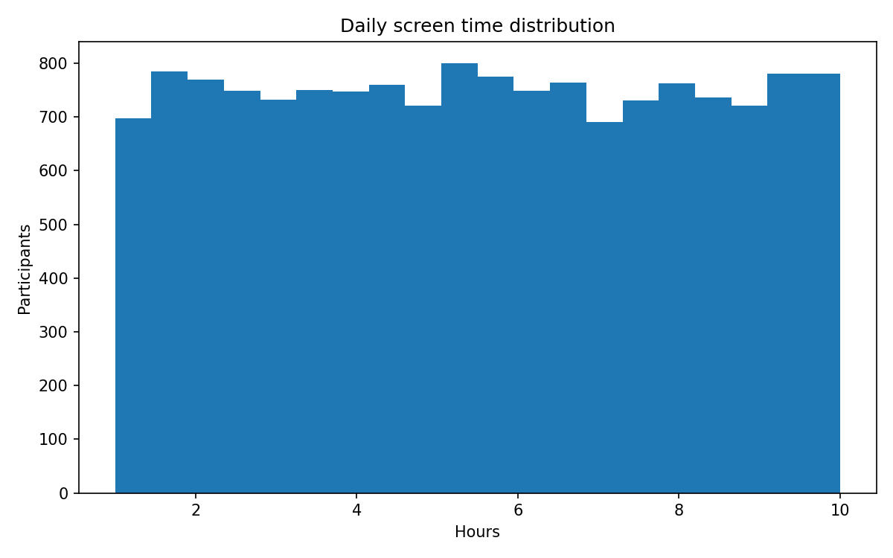
Observation: Daily screen time is centered near 5.50 hours.
Interpretation: The dataset contains a range of digital-use habits.
Research implication: Provides the exposure distribution for the primary research question.
Sleep Duration Distribution
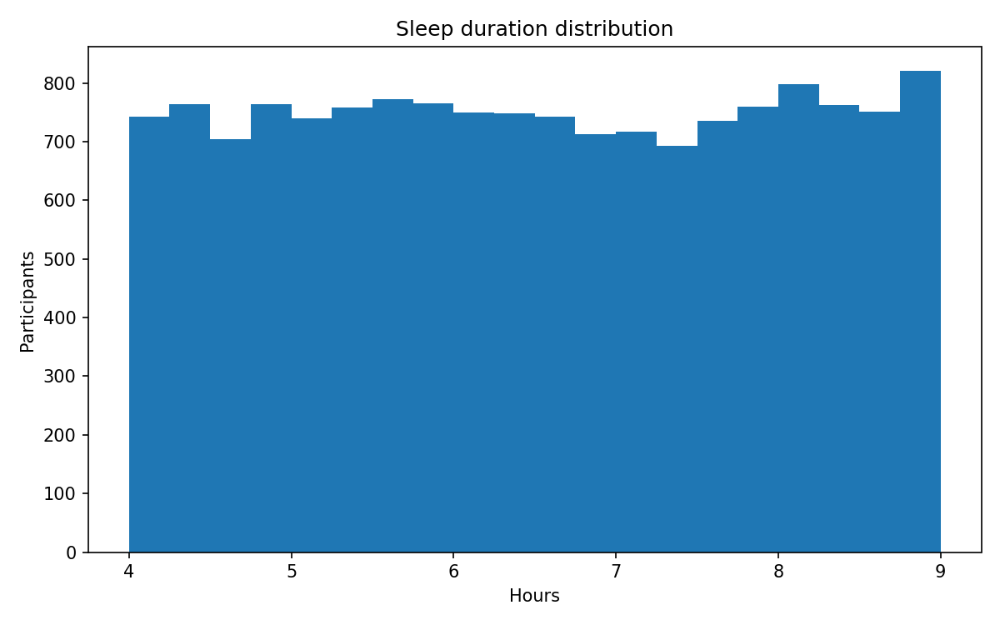
Observation: Average sleep duration is 6.51 hours.
Interpretation: Sleep hours vary among respondents.
Research implication: Establishes a baseline for evaluating sleep outcomes.
Screen Time vs Sleep Duration
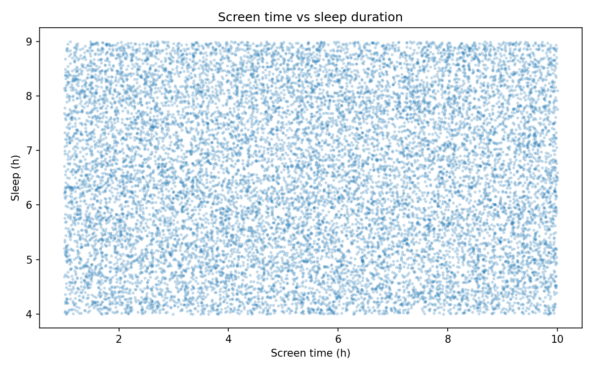
Observation: The Pearson correlation is approximately -0.002.
Interpretation: No meaningful linear relationship appears in these records.
Research implication: The hypothesis about screen time and sleep duration is not supported by this bivariate correlation.
Phone Use Before Sleep vs Quality
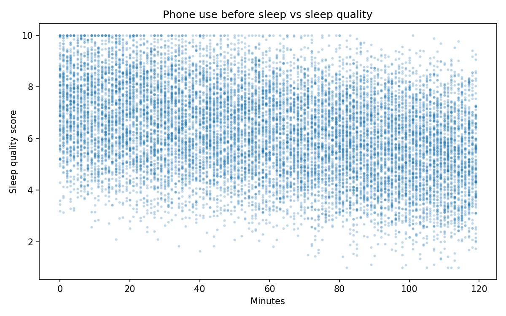
Observation: Shows variation in quality across pre-sleep phone-use durations.
Interpretation: The relationship requires attention to other factors.
Research implication: Addresses the nighttime-phone-use research question.
Screen Time vs Sleep Quality
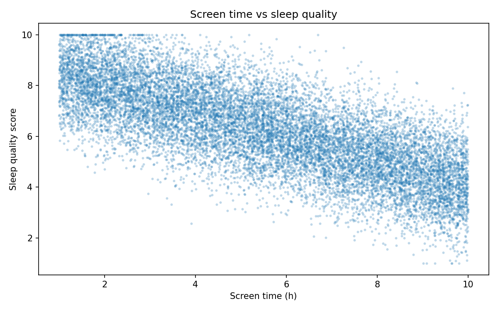
Observation: The Pearson correlation is approximately -0.747.
Interpretation: Higher screen time is associated with lower sleep-quality scores.
Research implication: Supports an association relevant to the main question, not a causal conclusion.
Screen Time by Gender
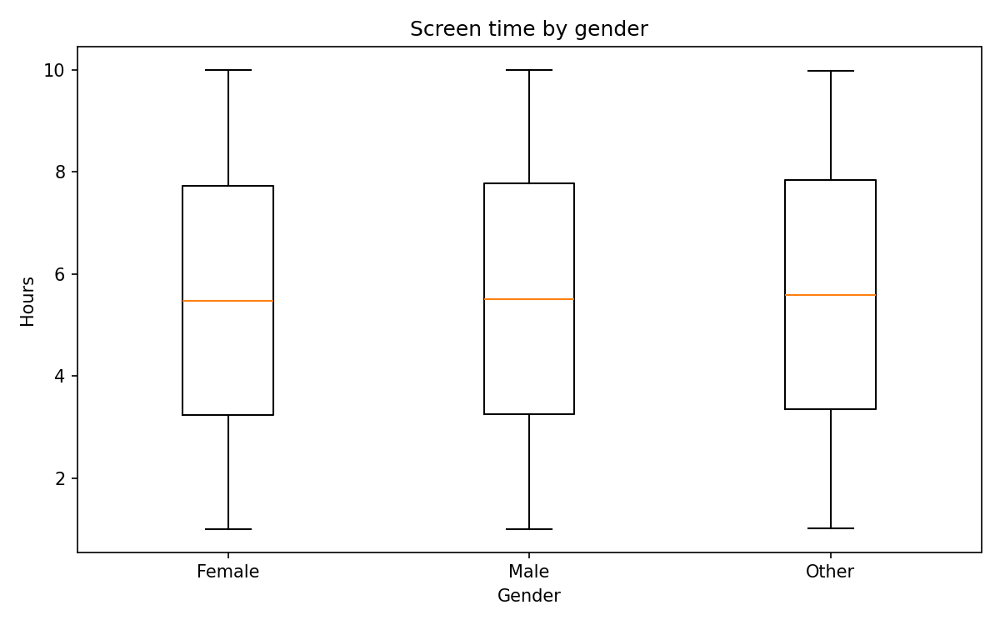
Observation: The distributions can be compared across reported genders.
Interpretation: Any observed group differences require contextual interpretation.
Research implication: Examines demographic variation in exposure.
Stress vs Mental Fatigue
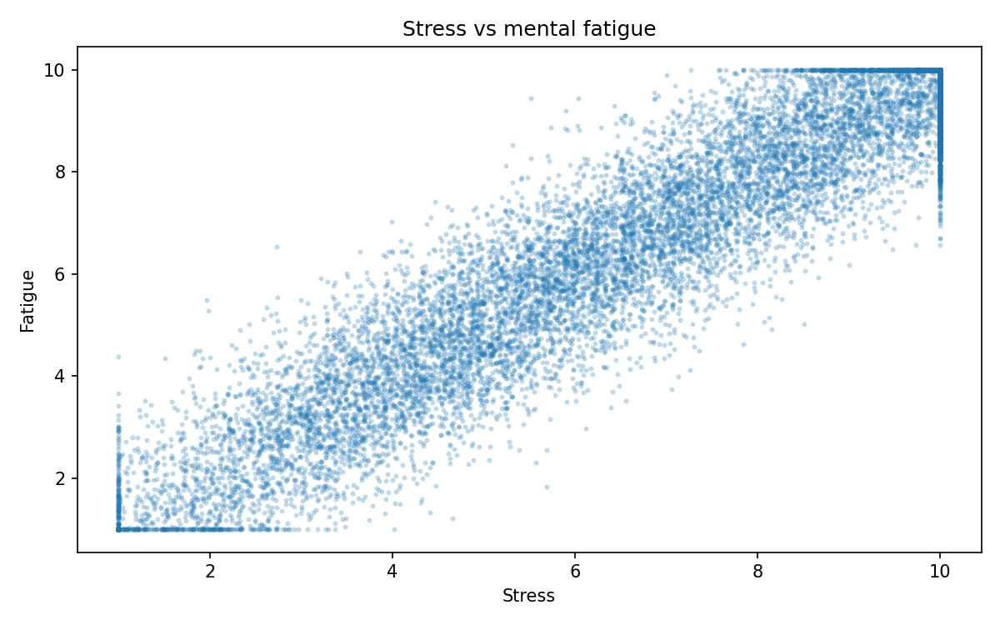
Observation: Displays the relationship between stress and mental fatigue.
Interpretation: Stress may be relevant when interpreting screen and sleep associations.
Research implication: Identifies a potential confounding factor.
Caffeine vs Sleep Duration
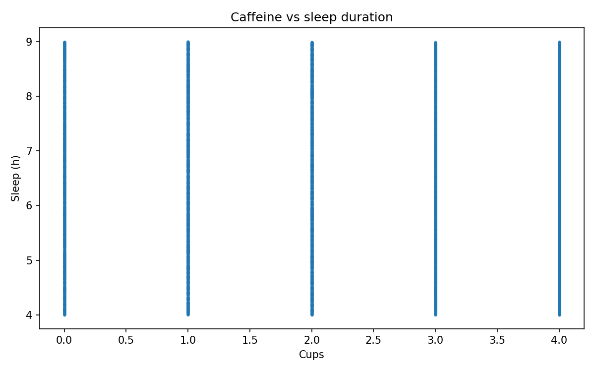
Observation: Shows nightly sleep hours across caffeine consumption levels.
Interpretation: Caffeine is another plausible sleep-related factor.
Research implication: Supports discussion of study limitations.
Correlation Matrix
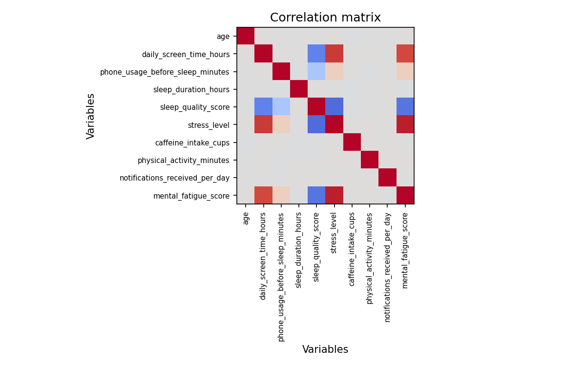
Observation: Screen time and stress correlate at approximately 0.879.
Interpretation: Strong pairwise correlations do not prove a causal pathway.
Research implication: Highlights the need to consider confounding and multivariable analysis.
Data Cleaning & Preparation
Source: 15,000 records and 13 original fields. Cleaning was conservative: no rows were removed, no missing values or duplicates were found, and no invalid values were flagged under the documented checks.
01. Missing values
All 13 columns checked with isna().sum(); 0 missing cells. No imputation required.
02. Duplicates
All 15,000 records checked with duplicated(); 0 duplicate rows. No records removed.
03. Data types
Numeric measures parsed as numbers; gender and occupation treated as text. No failed numeric conversions.
04. Inconsistent formats
Column names normalized; categorical text trimmed and title-cased in the prepared dataset.
05. Invalid values
Age, daily screen hours, sleep duration and sleep quality checked against plausible limits; 0 records flagged by these rules.
06. Outliers
Extreme observations retained for inspection rather than deleted automatically; unusual does not necessarily mean erroneous.
07. Categorical values
Gender and occupation standardized for consistent grouping; source categories retained.
08. Transformations
Added screen-time groups: low ≤3h, moderate >3–6h, high >6h; added invalid-value flag. 15,000 rows retained.
Downloadable outputs: Cleaning report · Prepared CSV. Limitations: these plausibility checks are not proof that all source values are accurate.
Eight SQL Queries & Results
All eight queries were executed against a SQLite database built from the prepared CSV. Tables show the first five returned rows; complete outputs are available for download. The JOIN query joins a derived occupation lookup to the main table.
Query 1: 01 Basic Selection
SELECT user_id, daily_screen_time_hours, sleep_duration_hours, sleep_quality_score FROM sleep_data LIMIT 20;| user_id | daily_screen_time_hours | sleep_duration_hours | sleep_quality_score |
|---|---|---|---|
| 1 | 3.26 | 5.31 | 7.72 |
| 2 | 1.85 | 7.36 | 9.70 |
| 3 | 3.04 | 4.50 | 6.38 |
| 4 | 9.00 | 6.68 | 5.53 |
| 5 | 3.52 | 7.57 | 6.69 |
Query 2: 02 Filtering
SELECT user_id, daily_screen_time_hours, sleep_quality_score FROM sleep_data WHERE daily_screen_time_hours > 6 LIMIT 100;| user_id | daily_screen_time_hours | sleep_quality_score |
|---|---|---|
| 4 | 9.00 | 5.53 |
| 6 | 7.26 | 6.16 |
| 10 | 9.75 | 5.52 |
| 18 | 8.05 | 6.23 |
| 25 | 7.55 | 6.15 |
Query 3: 03 Multiple Conditions
SELECT user_id, daily_screen_time_hours, sleep_duration_hours FROM sleep_data WHERE daily_screen_time_hours > 6 AND sleep_duration_hours < 7 LIMIT 100;| user_id | daily_screen_time_hours | sleep_duration_hours |
|---|---|---|
| 4 | 9.00 | 6.68 |
| 10 | 9.75 | 4.73 |
| 25 | 7.55 | 4.89 |
| 37 | 7.53 | 4.33 |
| 45 | 6.55 | 4.25 |
Query 4: 04 Sorting
SELECT user_id, daily_screen_time_hours FROM sleep_data ORDER BY daily_screen_time_hours DESC LIMIT 20;| user_id | daily_screen_time_hours |
|---|---|
| 920 | 10.0 |
| 2328 | 10.0 |
| 10102 | 10.0 |
| 13996 | 10.0 |
| 14170 | 10.0 |
Query 5: 05 Aggregation
SELECT COUNT(*) AS participants, ROUND(AVG(daily_screen_time_hours),2) AS avg_screen_time, ROUND(AVG(sleep_duration_hours),2) AS avg_sleep FROM sleep_data;| participants | avg_screen_time | avg_sleep |
|---|---|---|
| 15000 | 5.5 | 6.51 |
Query 6: 06 Group Comparison
SELECT screen_time_group, COUNT(*) AS participants, ROUND(AVG(sleep_quality_score),2) AS avg_sleep_quality, ROUND(AVG(sleep_duration_hours),2) AS avg_sleep_duration FROM sleep_data GROUP BY screen_time_group ORDER BY avg_sleep_quality;| screen_time_group | participants | avg_sleep_quality | avg_sleep_duration |
|---|---|---|---|
| High (>6h) | 6615 | 5.00 | 6.51 |
| Moderate (3-6h) | 5037 | 6.74 | 6.50 |
| Low (<=3h) | 3348 | 7.96 | 6.52 |
Query 7: 07 Having
SELECT occupation, COUNT(*) AS participants, ROUND(AVG(daily_screen_time_hours),2) AS avg_screen_time FROM sleep_data GROUP BY occupation HAVING COUNT(*) >= 30 ORDER BY avg_screen_time DESC;| occupation | participants | avg_screen_time |
|---|---|---|
| Student | 1861 | 5.63 |
| Software Engineer | 1917 | 5.55 |
| Manager | 1962 | 5.54 |
| Doctor | 1922 | 5.49 |
| Teacher | 1797 | 5.47 |
Query 8: 08 Join
SELECT d.occupation, COUNT(*) AS participants, ROUND(AVG(d.sleep_quality_score),2) AS avg_sleep_quality FROM sleep_data d JOIN (SELECT DISTINCT occupation FROM sleep_data WHERE occupation IS NOT NULL) o ON d.occupation=o.occupation GROUP BY d.occupation ORDER BY participants DESC;| occupation | participants | avg_sleep_quality |
|---|---|---|
| Manager | 1962 | 6.21 |
| Doctor | 1922 | 6.26 |
| Software Engineer | 1917 | 6.20 |
| Freelancer | 1891 | 6.28 |
| Student | 1861 | 6.11 |
SQL-Based Visualizations
Average Sleep Quality by Screen-Time Group
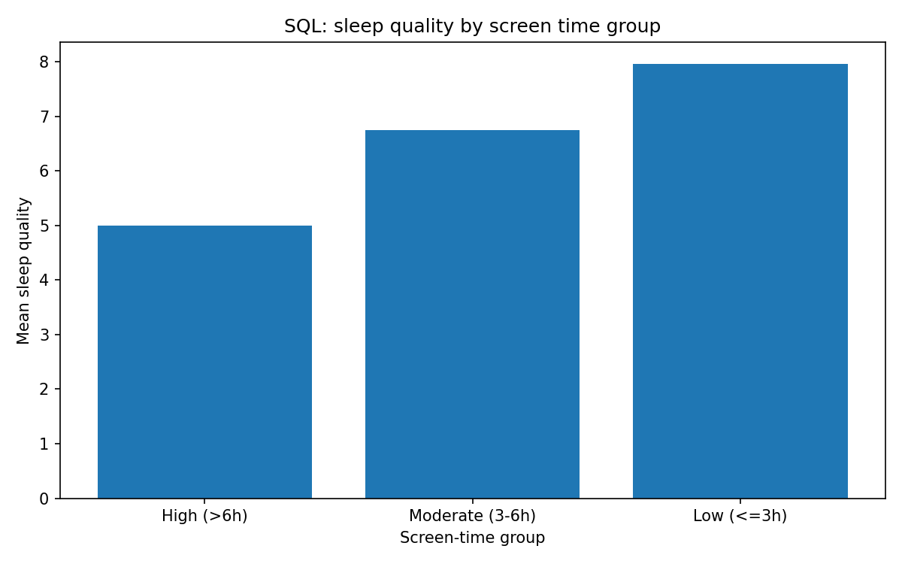
Low: 7.96; Moderate: 6.74; High: 5.00 average sleep-quality score.
Average Screen Time by Occupation
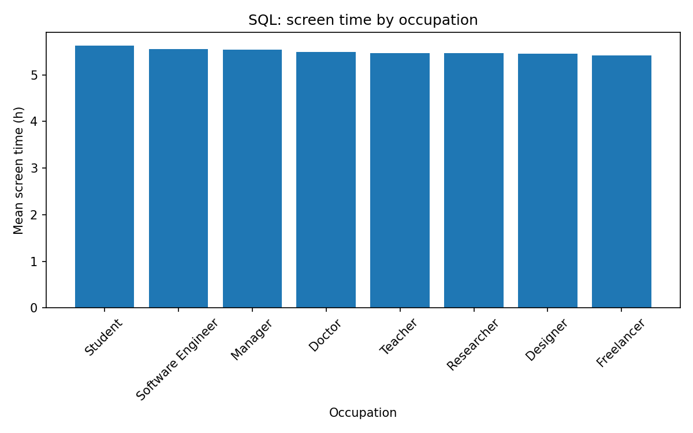
Based on the SQL GROUP BY and HAVING query; occupation differences are descriptive and do not establish causation.
Five Research Findings
1. Screen time and sleep quality
Daily screen time and sleep-quality scores show a strong negative correlation (r ≈ -0.747).
2. Screen time and sleep duration
Daily screen time and sleep duration show virtually no linear correlation (r ≈ -0.002).
3. Differences by screen-time group
Mean sleep quality is 7.96 for low use, 6.74 for moderate use, and 5.00 for high use.
4. Screen time and stress
Daily screen time and stress level show a strong positive correlation (r ≈ 0.879).
5. Population limitation
The source contains ages 18–59 and multiple occupations; it does not identify all respondents as college students.
These results describe associations in this dataset, not causal effects. Generalization to college students is limited because student enrollment was not measured.
About This Project
Project Purpose & Scope
This project investigates whether students’ technology habits are associated with differences in sleep duration and sleep quality using data analysis.
Through empirical analysis of student screen usage patterns across academic, leisure, and pre-bedtime contexts, this research aims to identify meaningful relationships that can inform healthy technology habits and support overall student health and academic success.